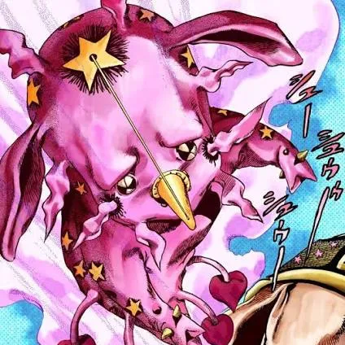
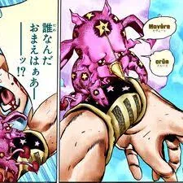

Tusk

Info
Slot: Accessory
Recolorable?: No
Unique Colors: None
Particle Effects: None
Sound Effects: None
Owner: None
Description
Tusk appears to be a pink homunculous-like creature with unidentifiable appendages. It is one of the smallest relics, roughly a bit smaller than the player's head. As the player moves around, Tusk will follow while rotating in the air.
Inspiration
Tusk was inspired by the stand Tusk Act One from the popular series JoJo's Bizarre adventure. In the story, Tusk belongs to the main character of Part 7, Johnny Joestar. Tusk grants Johnny the power of the spin, which is why Tusk has

Tusk resting on the player's shoulder
Tusk spinning while following the player

Tusk Act One from Jojo's Bizarre Adventure

Another picture of Tusk Act One
CAPTION
CAPTION
CAPTION
CAPTION